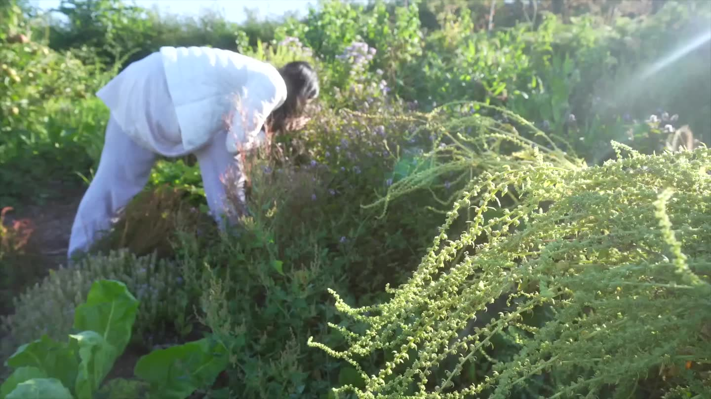

EVERYDAY ENGLISH · 日常生活
把生活里的英语，
说进你的日常。
从自然醒、花园里的片刻，到一杯热茶。
看见生活，听懂表达，然后开口。
A slower morning.
英伦乡村早晨真实 Vlog · 4:45 · 47 句生活表达选一段感兴趣的日常，让每一句都有使用的场景。
换个关键词，或看看其他类型的课程。
当前为原创场景示例课，使用合成朗读；照片为场景封面。真实 Vlog 正在筹备，你也可以导入自己的视频开始学习。
不着急的早晨 · 从生活里的小事开始开口
先看中文，试着自己说。再听一遍，找出差异，最后用自己的声音复述。
不用逐字翻译，先抓住“我准备做什么”的表达。
YOUR WORD COLLECTION
点一下字幕里的单词，收藏释义，也留下它出现的那一刻。
收藏保存在当前浏览器。词库与许可
收藏一整句，连同使用场景一起记住。
选一段视频，配上字幕，就能逐句精听与跟读。
视频只在你的设备里播放，不会上传。刷新后需重新选择视频。
双语字幕每段第一行为英文，后续行为中文。单语字幕也能精听和录音；填空按英文句子自动生成。
只导入你有权使用的文件。正式上架时，课程还需要保存来源和使用许可。
GitHub 提供工具；视频的使用许可需要单独核对。
搜索 morning routine vlog、grocery shopping vlog、day in my life、cook with me。用 Creative Commons 筛选后，逐条检查整条视频的许可、上传者身份和音乐来源；搜索结果只是候选。
查看 YouTube 许可说明适合长期课程。明确约定付费课程使用、剪辑翻译、境内托管、抖音宣传片段、授权期限与音乐处理。优先请作者提供原始文件。
适合咖啡、厨房、通勤等补充画面，搭配原创讲稿；不是现成的英语对话课。使用前查许可，不能把原片当素材包直接转售。
查看素材许可有明确许可标记的英语访谈等视频，日常 Vlog 较少。每个文件单独查看许可和署名要求。
浏览视频来源调研日期：2026-10-14。这里没有把任何具体生活 Vlog 标成“已获商业授权”。
1200 条公开索引候选。题材按公开搜索归类；英语原声尚未逐条试听核验。它们不是已获授权的成品课程。
学习、听写和复习记录只保存在当前浏览器。